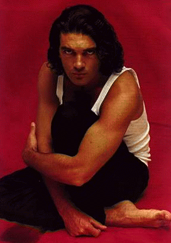

62 captures
08 Jun 1997 - 16 Mar 2020
May
JUN
Dec
08
1996
1997
1998
success
fail
About this capture
COLLECTED BY
Organization:
Alexa Crawls
Starting in 1996,
Alexa Internet
has been donating their crawl data to the Internet Archive. Flowing in every day, these data are added to the
Wayback Machine
after an embargo period.
Collection:
Alexa Crawl GR
Crawl GR from Alexa Internet. This data is currently not publicly accessible.
TIMESTAMPS
The Wayback Machine - https://web.archive.org/web/19970608004456/http://www.sju.edu:80/~delvalle/antonio.html
Welcome to:
The
Antonio Banderas
Homepage
You're visitor #
since February 17, 1996
B
iography

P
ictures
N
ewsletter
L
inks
M
ailing
L
ist
TV Schedule
Compiled by TVnow
Member of the Internet Link Exchange
© Vanessa DelValle 1995-1996
Creation Date:
July 15, 1995
Last Updated:
11/06/96
The design of
this homepage
is best enhanced by using Netscape